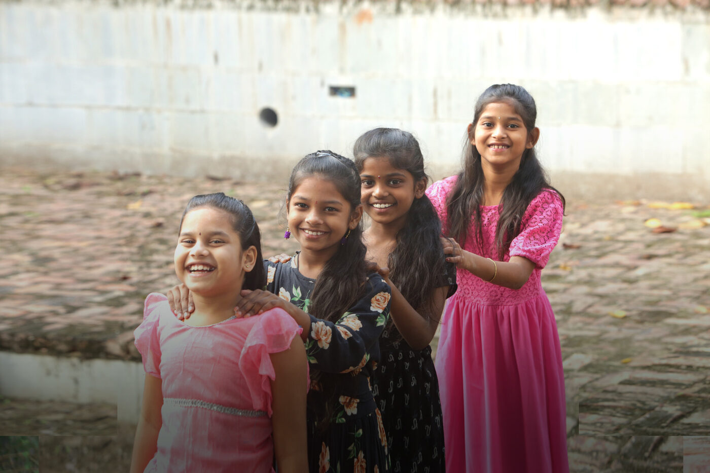
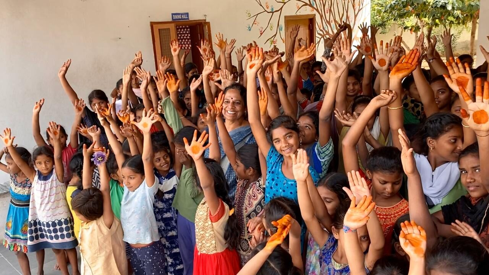
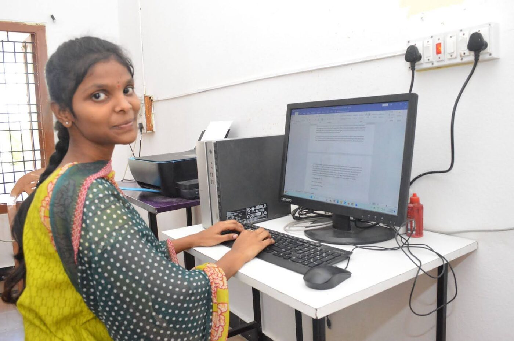

About
About Aarti for Girls
Helping girls and women realise their strength and potential.

Our Story
It began with one abandoned child
In 1992, Sandhya Puchalapalli, our Founder & Director, found a two-year-old girl abandoned on the street in Kadapa. Moved to act, she and a few like-minded individuals established a home for children in need, beginning with just six children under the Vijay Foundation Trust.
By 1996, the home had grown to 36 children, prompting a move to Aarti Home — named after Sandhya’s niece and first donor, Aarti. Over 30+ years, Aarti Home has grown into a leading organization working for the empowerment of girls and women through care, education, livelihood, and advocacy.
Vision
A society with a changed mindset
A society with a changed mindset regarding girls and women who, being aware of their rights, are celebrated, cared for and educated, and independently make informed choices.

Mission
Empowering girls to become self-sufficient
Self-sufficiency
Empowering girls to become independent and self-sufficient adults.
Ending harmful practices
Actively campaigning against the abhorrent practices of female foeticide and infanticide.
Intrinsic value
Upholding the intrinsic value of every girl child and woman.
The power of education
Providing women with the power of education and enabling them to confidently express themselves.
Our Guiding Principles
The values behind everything we do
Integrity
We operate with the highest ethical standards.
Honesty
Transparency and truthfulness are fundamental to our work.
Commitment
We are dedicated to our mission and the well-being of those we serve.
Accountability
We take responsibility for our actions and the impact we create.
Milestones & Programs
How we create change
Care
Aarti Home provides shelter, love, and lifelong support to abandoned children. Today, 130 children call it home.
Family-Based Care (FBC)
Supporting children through families and communities, 2,300 children benefit from interventions in education, nutrition, and counseling — integrating naturally into society.
Empower
Economic independence is key. Our livelihood programs have trained over 300,000 women in tailoring, embroidery, handicrafts, and beauty services. The Lalitha Cooperative helps women sell their products and sustain income.
Educate
Aarti School, established in 2007, provides quality education to all children, combining academics with STEM, creative arts, mindfulness, yoga, dance, and music.
Advocate
Awareness drives change. We run programs on health, legal rights, and gender equality — rescuing victims, supporting families, and training stakeholders to create safer communities.